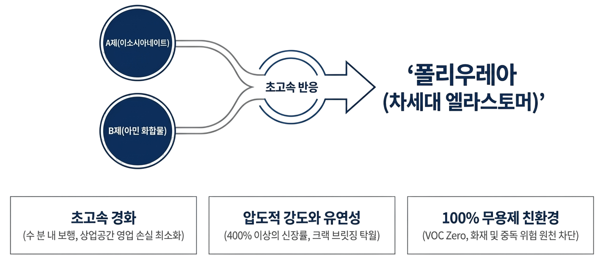
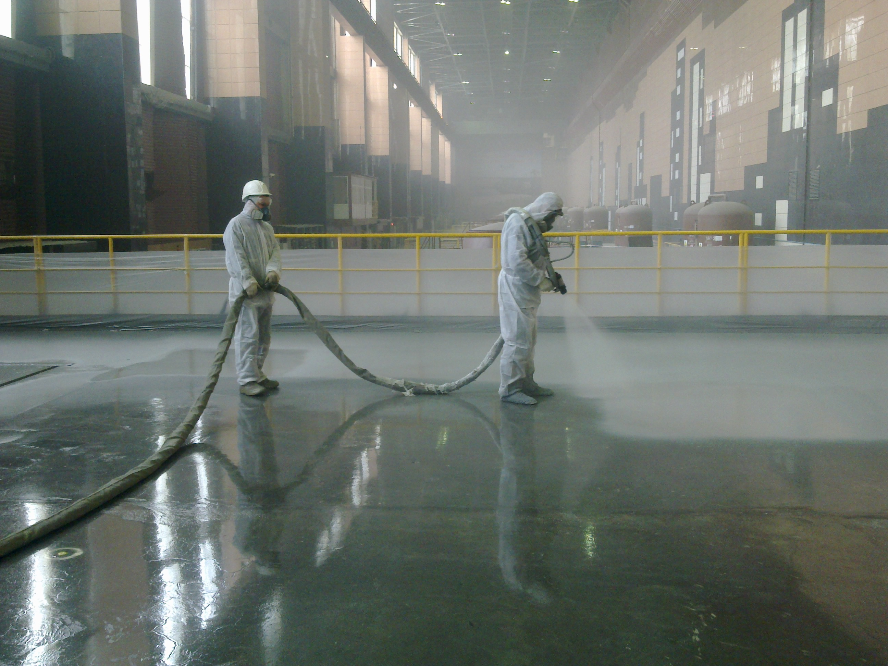
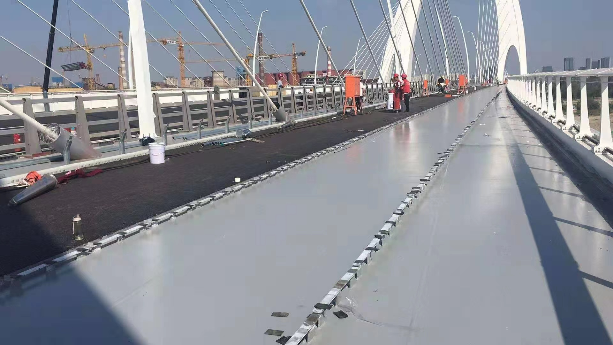
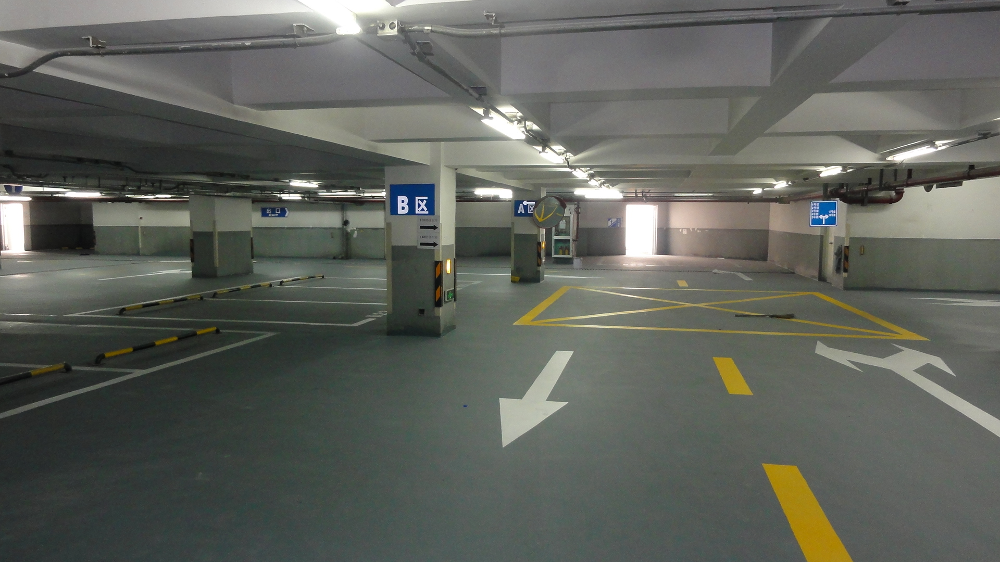
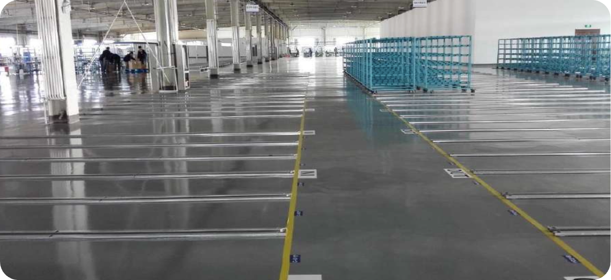

Understanding Polyurea
이소시아네이트와 아민의 화학적 융합을 통해 탄생한 폴리우레아는 가혹한 산업 현장에서도 압도적이고 변함없는 내구성을 자랑합니다.
이소시아네이트(Part A)와 아민 화합물(Part B)의 초고속 화학적 융합으로 완성되는 차세대 엘라스토머(Next-Gen Elastomer)입니다.
A제(이소시아네이트)와 B제(아민 화합물)가 혼합되는 즉시 반응하여 강력한 도막을 형성하는 차세대 엘라스토머입니다.
유기용제가 전혀 포함되지 않아 화재 위험과 환경 오염을 최소화하는 고기능성 안전 소재입니다.
고속 뿜칠 도장뿐만 아니라, 일반 롤러나 붓으로 시공 가능한 수도장용 제품군도 완비되어 있습니다.

SWD 폴리우레아 기술의 핵심 경쟁력

스프레이 도포 직후 5~15초 내에 도막을 형성합니다. 수 분 내 보행, 수 시간 내 차량 통행이 가능하여 공기 단축 및 영업 손실을 최소화합니다.

외부의 물리적 충격을 흡수하고, 400% 이상의 신장률로 크랙 브릿징 성능이 탁월합니다. 구조물의 수축 및 팽창에 도막 찢어짐 없이 완벽히 대응합니다.

100% 고형분 물질로 인화성 및 유기용제(VOC)가 전혀 포함되지 않은 무독성 제품입니다. 밀폐된 지하 공간 시공 시에도 중독 및 화재 위험을 원천 차단합니다.
글로벌 표준 기준을 뛰어넘는 SWD의 검증된 기술력
C5 최상위 해양 가혹 조건 시뮬레이션 통과. 재도장 없이 해안/해상 환경에서 20년 이상의 경이로운 수명 및 무황변 유지.
중성 염수 분무 3,000시간(CYP 최대 300 사이클) 및 인공 주기 노화 2,000시간 테스트 결함 없이 통과. 표면 박리 및 녹 발생 완벽 억제.
ASTM D4541 표준 테스트 결과, 압도적인 부착 강도 달성. 구조물 변형 시에도 코팅이 분리되지 않고 하지를 완벽하게 보호합니다.
퍼포먼스 비교 매트릭스
| 항목 | SWD 폴리우레아 | 기존 폴리우레탄 | 기존 에폭시 |
|---|---|---|---|
| 시공 및 완전 경화 기간 | 1일 이내 (순간경화) | 2~4일 | 6~8일 |
| 저온 환경 시공 가능 여부 | 가능 (-35°C 환경) | 제한적 (-6°C 이상) | 불가능 (10°C 이상) |
| 부착력 및 유연성(균열) | 매우 강함 / 신율 탁월 | 약함 / 신율 우수 | 강함 / 깨짐 발생 |
| 수분 저항(가수분해) | 전혀 없음 | 발생함 (수명 단축) | 전혀 없음 |
| 유지 보수 주기 | 반영구적 (초장기) | 4~7년마다 재시공 | 크랙 발생 시 잦은 보수 |
아로마틱(방향족) vs 알리파틱(지방족)

핵심 물성
압도적인 고강도, 빠른 속경화 및 우수한 내화학성
최적 환경
중장비가 다니는 물류 창고, 공장 바닥, 화학 탱크 내부
주의 사항
장기적인 자외선(UV) 노출 시 표면 황변 발생
핵심 물성
완벽한 자외선 차단, 초내후성 및 영구적 색상 안정성
최적 환경
옥외 노출 옥상 방수, 야외 수영장, 선박 탑코트
혁신 포인트
별도의 보호 상도 없이 단독 노출 시공 가능